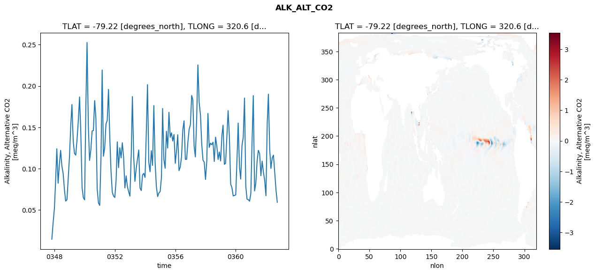
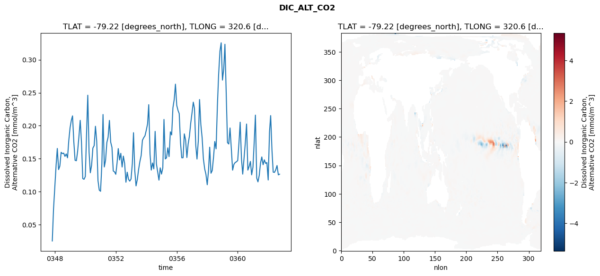
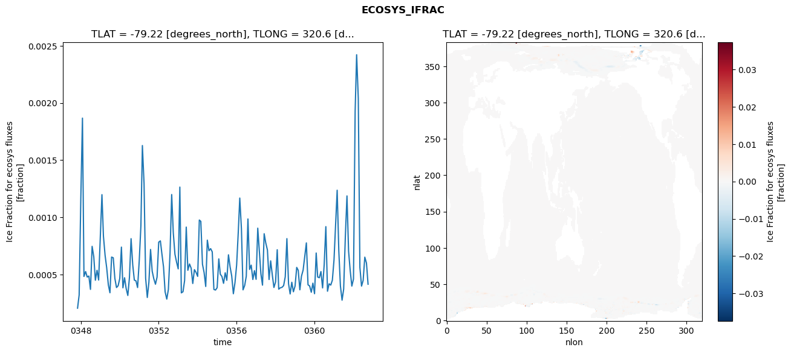
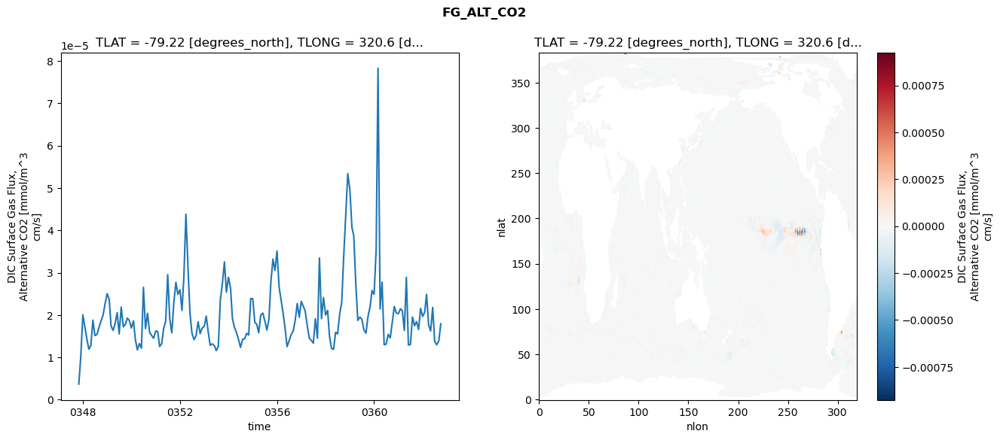

glb-dor_North_Atlantic_basin_010_1999-10-01_00043#
Simulation details#
Case: smyle.cdr-atlas-v0.glb-dor_North_Atlantic_basin_010_1999-10-01_00043.001
Basin: North_Atlantic_basin
Polygon: 10.0
Start date: 1999-10
Show code cell source Hide code cell source
import xarray as xr
import matplotlib.pyplot as plt
Show code cell source Hide code cell source
zarr_store = "/path/to/zarr/store"
# Parameters
zarr_store = "/global/cfs/projectdirs/m4746/Projects/Ocean-CDR-Atlas-v0/data/validation/smyle.cdr-atlas-v0.glb-dor_North_Atlantic_basin_010_1999-10-01_00043.001.validation.zarr"
Show code cell source Hide code cell source
%%time
ds_o = xr.open_zarr(zarr_store).compute()
ds_o
CPU times: user 722 ms, sys: 450 ms, total: 1.17 s
Wall time: 1.44 s
<xarray.Dataset> Size: 2MB
Dimensions: (nlat: 384, nlon: 320, time: 180)
Coordinates:
TLAT float64 8B -79.22
TLONG float64 8B 320.6
ULAT float64 8B -78.95
ULONG float64 8B 321.1
* time (time) object 1kB 0347-11-01 00:00:00 ... 0362-10-01 0...
z_t float32 4B 500.0
Dimensions without coordinates: nlat, nlon
Data variables:
ALK_ALT_CO2_diff (nlat, nlon) float32 492kB nan nan nan ... nan nan nan
ALK_ALT_CO2_rmse (time) float64 1kB 0.01476 0.03454 ... 0.07396 0.05945
DIC_ALT_CO2_diff (nlat, nlon) float32 492kB nan nan nan ... nan nan nan
DIC_ALT_CO2_rmse (time) float64 1kB 0.0251 0.07378 ... 0.1254 0.1264
ECOSYS_IFRAC_diff (nlat, nlon) float32 492kB nan nan nan ... nan nan nan
ECOSYS_IFRAC_rmse (time) float64 1kB 0.0002055 0.0003213 ... 0.0004151
FG_ALT_CO2_diff (nlat, nlon) float32 492kB nan nan nan ... nan nan nan
FG_ALT_CO2_rmse (time) float64 1kB 3.685e-06 1.021e-05 ... 1.793e-05xarray.Dataset
- nlat: 384
- nlon: 320
- time: 180
- TLAT()float64-79.22
- long_name :
- array of t-grid latitudes
- units :
- degrees_north
array(-79.22052261)
- TLONG()float64320.6
- long_name :
- array of t-grid longitudes
- units :
- degrees_east
array(320.56250892)
- ULAT()float64-78.95
- long_name :
- array of u-grid latitudes
- units :
- degrees_north
array(-78.95289509)
- ULONG()float64321.1
- long_name :
- array of u-grid longitudes
- units :
- degrees_east
array(321.12500894)
- time(time)object0347-11-01 00:00:00 ... 0362-10-...
- bounds :
- time_bound
- long_name :
- time
array([cftime.DatetimeNoLeap(347, 11, 1, 0, 0, 0, 0, has_year_zero=True), cftime.DatetimeNoLeap(347, 12, 1, 0, 0, 0, 0, has_year_zero=True), cftime.DatetimeNoLeap(348, 1, 1, 0, 0, 0, 0, has_year_zero=True), cftime.DatetimeNoLeap(348, 2, 1, 0, 0, 0, 0, has_year_zero=True), cftime.DatetimeNoLeap(348, 3, 1, 0, 0, 0, 0, has_year_zero=True), cftime.DatetimeNoLeap(348, 4, 1, 0, 0, 0, 0, has_year_zero=True), cftime.DatetimeNoLeap(348, 5, 1, 0, 0, 0, 0, has_year_zero=True), cftime.DatetimeNoLeap(348, 6, 1, 0, 0, 0, 0, has_year_zero=True), cftime.DatetimeNoLeap(348, 7, 1, 0, 0, 0, 0, has_year_zero=True), cftime.DatetimeNoLeap(348, 8, 1, 0, 0, 0, 0, has_year_zero=True), cftime.DatetimeNoLeap(348, 9, 1, 0, 0, 0, 0, has_year_zero=True), cftime.DatetimeNoLeap(348, 10, 1, 0, 0, 0, 0, has_year_zero=True), cftime.DatetimeNoLeap(348, 11, 1, 0, 0, 0, 0, has_year_zero=True), cftime.DatetimeNoLeap(348, 12, 1, 0, 0, 0, 0, has_year_zero=True), cftime.DatetimeNoLeap(349, 1, 1, 0, 0, 0, 0, has_year_zero=True), cftime.DatetimeNoLeap(349, 2, 1, 0, 0, 0, 0, has_year_zero=True), cftime.DatetimeNoLeap(349, 3, 1, 0, 0, 0, 0, has_year_zero=True), cftime.DatetimeNoLeap(349, 4, 1, 0, 0, 0, 0, has_year_zero=True), cftime.DatetimeNoLeap(349, 5, 1, 0, 0, 0, 0, has_year_zero=True), cftime.DatetimeNoLeap(349, 6, 1, 0, 0, 0, 0, has_year_zero=True), cftime.DatetimeNoLeap(349, 7, 1, 0, 0, 0, 0, has_year_zero=True), cftime.DatetimeNoLeap(349, 8, 1, 0, 0, 0, 0, has_year_zero=True), cftime.DatetimeNoLeap(349, 9, 1, 0, 0, 0, 0, has_year_zero=True), cftime.DatetimeNoLeap(349, 10, 1, 0, 0, 0, 0, has_year_zero=True), cftime.DatetimeNoLeap(349, 11, 1, 0, 0, 0, 0, has_year_zero=True), cftime.DatetimeNoLeap(349, 12, 1, 0, 0, 0, 0, has_year_zero=True), cftime.DatetimeNoLeap(350, 1, 1, 0, 0, 0, 0, has_year_zero=True), cftime.DatetimeNoLeap(350, 2, 1, 0, 0, 0, 0, has_year_zero=True), cftime.DatetimeNoLeap(350, 3, 1, 0, 0, 0, 0, has_year_zero=True), cftime.DatetimeNoLeap(350, 4, 1, 0, 0, 0, 0, has_year_zero=True), cftime.DatetimeNoLeap(350, 5, 1, 0, 0, 0, 0, has_year_zero=True), cftime.DatetimeNoLeap(350, 6, 1, 0, 0, 0, 0, has_year_zero=True), cftime.DatetimeNoLeap(350, 7, 1, 0, 0, 0, 0, has_year_zero=True), cftime.DatetimeNoLeap(350, 8, 1, 0, 0, 0, 0, has_year_zero=True), cftime.DatetimeNoLeap(350, 9, 1, 0, 0, 0, 0, has_year_zero=True), cftime.DatetimeNoLeap(350, 10, 1, 0, 0, 0, 0, has_year_zero=True), cftime.DatetimeNoLeap(350, 11, 1, 0, 0, 0, 0, has_year_zero=True), cftime.DatetimeNoLeap(350, 12, 1, 0, 0, 0, 0, has_year_zero=True), cftime.DatetimeNoLeap(351, 1, 1, 0, 0, 0, 0, has_year_zero=True), cftime.DatetimeNoLeap(351, 2, 1, 0, 0, 0, 0, has_year_zero=True), cftime.DatetimeNoLeap(351, 3, 1, 0, 0, 0, 0, has_year_zero=True), cftime.DatetimeNoLeap(351, 4, 1, 0, 0, 0, 0, has_year_zero=True), cftime.DatetimeNoLeap(351, 5, 1, 0, 0, 0, 0, has_year_zero=True), cftime.DatetimeNoLeap(351, 6, 1, 0, 0, 0, 0, has_year_zero=True), cftime.DatetimeNoLeap(351, 7, 1, 0, 0, 0, 0, has_year_zero=True), cftime.DatetimeNoLeap(351, 8, 1, 0, 0, 0, 0, has_year_zero=True), cftime.DatetimeNoLeap(351, 9, 1, 0, 0, 0, 0, has_year_zero=True), cftime.DatetimeNoLeap(351, 10, 1, 0, 0, 0, 0, has_year_zero=True), cftime.DatetimeNoLeap(351, 11, 1, 0, 0, 0, 0, has_year_zero=True), cftime.DatetimeNoLeap(351, 12, 1, 0, 0, 0, 0, has_year_zero=True), cftime.DatetimeNoLeap(352, 1, 1, 0, 0, 0, 0, has_year_zero=True), cftime.DatetimeNoLeap(352, 2, 1, 0, 0, 0, 0, has_year_zero=True), cftime.DatetimeNoLeap(352, 3, 1, 0, 0, 0, 0, has_year_zero=True), cftime.DatetimeNoLeap(352, 4, 1, 0, 0, 0, 0, has_year_zero=True), cftime.DatetimeNoLeap(352, 5, 1, 0, 0, 0, 0, has_year_zero=True), cftime.DatetimeNoLeap(352, 6, 1, 0, 0, 0, 0, has_year_zero=True), cftime.DatetimeNoLeap(352, 7, 1, 0, 0, 0, 0, has_year_zero=True), cftime.DatetimeNoLeap(352, 8, 1, 0, 0, 0, 0, has_year_zero=True), cftime.DatetimeNoLeap(352, 9, 1, 0, 0, 0, 0, has_year_zero=True), cftime.DatetimeNoLeap(352, 10, 1, 0, 0, 0, 0, has_year_zero=True), cftime.DatetimeNoLeap(352, 11, 1, 0, 0, 0, 0, has_year_zero=True), cftime.DatetimeNoLeap(352, 12, 1, 0, 0, 0, 0, has_year_zero=True), cftime.DatetimeNoLeap(353, 1, 1, 0, 0, 0, 0, has_year_zero=True), cftime.DatetimeNoLeap(353, 2, 1, 0, 0, 0, 0, has_year_zero=True), cftime.DatetimeNoLeap(353, 3, 1, 0, 0, 0, 0, has_year_zero=True), cftime.DatetimeNoLeap(353, 4, 1, 0, 0, 0, 0, has_year_zero=True), cftime.DatetimeNoLeap(353, 5, 1, 0, 0, 0, 0, has_year_zero=True), cftime.DatetimeNoLeap(353, 6, 1, 0, 0, 0, 0, has_year_zero=True), cftime.DatetimeNoLeap(353, 7, 1, 0, 0, 0, 0, has_year_zero=True), cftime.DatetimeNoLeap(353, 8, 1, 0, 0, 0, 0, has_year_zero=True), cftime.DatetimeNoLeap(353, 9, 1, 0, 0, 0, 0, has_year_zero=True), cftime.DatetimeNoLeap(353, 10, 1, 0, 0, 0, 0, has_year_zero=True), cftime.DatetimeNoLeap(353, 11, 1, 0, 0, 0, 0, has_year_zero=True), cftime.DatetimeNoLeap(353, 12, 1, 0, 0, 0, 0, has_year_zero=True), cftime.DatetimeNoLeap(354, 1, 1, 0, 0, 0, 0, has_year_zero=True), cftime.DatetimeNoLeap(354, 2, 1, 0, 0, 0, 0, has_year_zero=True), cftime.DatetimeNoLeap(354, 3, 1, 0, 0, 0, 0, has_year_zero=True), cftime.DatetimeNoLeap(354, 4, 1, 0, 0, 0, 0, has_year_zero=True), cftime.DatetimeNoLeap(354, 5, 1, 0, 0, 0, 0, has_year_zero=True), cftime.DatetimeNoLeap(354, 6, 1, 0, 0, 0, 0, has_year_zero=True), cftime.DatetimeNoLeap(354, 7, 1, 0, 0, 0, 0, has_year_zero=True), cftime.DatetimeNoLeap(354, 8, 1, 0, 0, 0, 0, has_year_zero=True), cftime.DatetimeNoLeap(354, 9, 1, 0, 0, 0, 0, has_year_zero=True), cftime.DatetimeNoLeap(354, 10, 1, 0, 0, 0, 0, has_year_zero=True), cftime.DatetimeNoLeap(354, 11, 1, 0, 0, 0, 0, has_year_zero=True), cftime.DatetimeNoLeap(354, 12, 1, 0, 0, 0, 0, has_year_zero=True), cftime.DatetimeNoLeap(355, 1, 1, 0, 0, 0, 0, has_year_zero=True), cftime.DatetimeNoLeap(355, 2, 1, 0, 0, 0, 0, has_year_zero=True), cftime.DatetimeNoLeap(355, 3, 1, 0, 0, 0, 0, has_year_zero=True), cftime.DatetimeNoLeap(355, 4, 1, 0, 0, 0, 0, has_year_zero=True), cftime.DatetimeNoLeap(355, 5, 1, 0, 0, 0, 0, has_year_zero=True), cftime.DatetimeNoLeap(355, 6, 1, 0, 0, 0, 0, has_year_zero=True), cftime.DatetimeNoLeap(355, 7, 1, 0, 0, 0, 0, has_year_zero=True), cftime.DatetimeNoLeap(355, 8, 1, 0, 0, 0, 0, has_year_zero=True), cftime.DatetimeNoLeap(355, 9, 1, 0, 0, 0, 0, has_year_zero=True), cftime.DatetimeNoLeap(355, 10, 1, 0, 0, 0, 0, has_year_zero=True), cftime.DatetimeNoLeap(355, 11, 1, 0, 0, 0, 0, has_year_zero=True), cftime.DatetimeNoLeap(355, 12, 1, 0, 0, 0, 0, has_year_zero=True), cftime.DatetimeNoLeap(356, 1, 1, 0, 0, 0, 0, has_year_zero=True), cftime.DatetimeNoLeap(356, 2, 1, 0, 0, 0, 0, has_year_zero=True), cftime.DatetimeNoLeap(356, 3, 1, 0, 0, 0, 0, has_year_zero=True), cftime.DatetimeNoLeap(356, 4, 1, 0, 0, 0, 0, has_year_zero=True), cftime.DatetimeNoLeap(356, 5, 1, 0, 0, 0, 0, has_year_zero=True), cftime.DatetimeNoLeap(356, 6, 1, 0, 0, 0, 0, has_year_zero=True), cftime.DatetimeNoLeap(356, 7, 1, 0, 0, 0, 0, has_year_zero=True), cftime.DatetimeNoLeap(356, 8, 1, 0, 0, 0, 0, has_year_zero=True), cftime.DatetimeNoLeap(356, 9, 1, 0, 0, 0, 0, has_year_zero=True), cftime.DatetimeNoLeap(356, 10, 1, 0, 0, 0, 0, has_year_zero=True), cftime.DatetimeNoLeap(356, 11, 1, 0, 0, 0, 0, has_year_zero=True), cftime.DatetimeNoLeap(356, 12, 1, 0, 0, 0, 0, has_year_zero=True), cftime.DatetimeNoLeap(357, 1, 1, 0, 0, 0, 0, has_year_zero=True), cftime.DatetimeNoLeap(357, 2, 1, 0, 0, 0, 0, has_year_zero=True), cftime.DatetimeNoLeap(357, 3, 1, 0, 0, 0, 0, has_year_zero=True), cftime.DatetimeNoLeap(357, 4, 1, 0, 0, 0, 0, has_year_zero=True), cftime.DatetimeNoLeap(357, 5, 1, 0, 0, 0, 0, has_year_zero=True), cftime.DatetimeNoLeap(357, 6, 1, 0, 0, 0, 0, has_year_zero=True), cftime.DatetimeNoLeap(357, 7, 1, 0, 0, 0, 0, has_year_zero=True), cftime.DatetimeNoLeap(357, 8, 1, 0, 0, 0, 0, has_year_zero=True), cftime.DatetimeNoLeap(357, 9, 1, 0, 0, 0, 0, has_year_zero=True), cftime.DatetimeNoLeap(357, 10, 1, 0, 0, 0, 0, has_year_zero=True), cftime.DatetimeNoLeap(357, 11, 1, 0, 0, 0, 0, has_year_zero=True), cftime.DatetimeNoLeap(357, 12, 1, 0, 0, 0, 0, has_year_zero=True), cftime.DatetimeNoLeap(358, 1, 1, 0, 0, 0, 0, has_year_zero=True), cftime.DatetimeNoLeap(358, 2, 1, 0, 0, 0, 0, has_year_zero=True), cftime.DatetimeNoLeap(358, 3, 1, 0, 0, 0, 0, has_year_zero=True), cftime.DatetimeNoLeap(358, 4, 1, 0, 0, 0, 0, has_year_zero=True), cftime.DatetimeNoLeap(358, 5, 1, 0, 0, 0, 0, has_year_zero=True), cftime.DatetimeNoLeap(358, 6, 1, 0, 0, 0, 0, has_year_zero=True), cftime.DatetimeNoLeap(358, 7, 1, 0, 0, 0, 0, has_year_zero=True), cftime.DatetimeNoLeap(358, 8, 1, 0, 0, 0, 0, has_year_zero=True), cftime.DatetimeNoLeap(358, 9, 1, 0, 0, 0, 0, has_year_zero=True), cftime.DatetimeNoLeap(358, 10, 1, 0, 0, 0, 0, has_year_zero=True), cftime.DatetimeNoLeap(358, 11, 1, 0, 0, 0, 0, has_year_zero=True), cftime.DatetimeNoLeap(358, 12, 1, 0, 0, 0, 0, has_year_zero=True), cftime.DatetimeNoLeap(359, 1, 1, 0, 0, 0, 0, has_year_zero=True), cftime.DatetimeNoLeap(359, 2, 1, 0, 0, 0, 0, has_year_zero=True), cftime.DatetimeNoLeap(359, 3, 1, 0, 0, 0, 0, has_year_zero=True), cftime.DatetimeNoLeap(359, 4, 1, 0, 0, 0, 0, has_year_zero=True), cftime.DatetimeNoLeap(359, 5, 1, 0, 0, 0, 0, has_year_zero=True), cftime.DatetimeNoLeap(359, 6, 1, 0, 0, 0, 0, has_year_zero=True), cftime.DatetimeNoLeap(359, 7, 1, 0, 0, 0, 0, has_year_zero=True), cftime.DatetimeNoLeap(359, 8, 1, 0, 0, 0, 0, has_year_zero=True), cftime.DatetimeNoLeap(359, 9, 1, 0, 0, 0, 0, has_year_zero=True), cftime.DatetimeNoLeap(359, 10, 1, 0, 0, 0, 0, has_year_zero=True), cftime.DatetimeNoLeap(359, 11, 1, 0, 0, 0, 0, has_year_zero=True), cftime.DatetimeNoLeap(359, 12, 1, 0, 0, 0, 0, has_year_zero=True), cftime.DatetimeNoLeap(360, 1, 1, 0, 0, 0, 0, has_year_zero=True), cftime.DatetimeNoLeap(360, 2, 1, 0, 0, 0, 0, has_year_zero=True), cftime.DatetimeNoLeap(360, 3, 1, 0, 0, 0, 0, has_year_zero=True), cftime.DatetimeNoLeap(360, 4, 1, 0, 0, 0, 0, has_year_zero=True), cftime.DatetimeNoLeap(360, 5, 1, 0, 0, 0, 0, has_year_zero=True), cftime.DatetimeNoLeap(360, 6, 1, 0, 0, 0, 0, has_year_zero=True), cftime.DatetimeNoLeap(360, 7, 1, 0, 0, 0, 0, has_year_zero=True), cftime.DatetimeNoLeap(360, 8, 1, 0, 0, 0, 0, has_year_zero=True), cftime.DatetimeNoLeap(360, 9, 1, 0, 0, 0, 0, has_year_zero=True), cftime.DatetimeNoLeap(360, 10, 1, 0, 0, 0, 0, has_year_zero=True), cftime.DatetimeNoLeap(360, 11, 1, 0, 0, 0, 0, has_year_zero=True), cftime.DatetimeNoLeap(360, 12, 1, 0, 0, 0, 0, has_year_zero=True), cftime.DatetimeNoLeap(361, 1, 1, 0, 0, 0, 0, has_year_zero=True), cftime.DatetimeNoLeap(361, 2, 1, 0, 0, 0, 0, has_year_zero=True), cftime.DatetimeNoLeap(361, 3, 1, 0, 0, 0, 0, has_year_zero=True), cftime.DatetimeNoLeap(361, 4, 1, 0, 0, 0, 0, has_year_zero=True), cftime.DatetimeNoLeap(361, 5, 1, 0, 0, 0, 0, has_year_zero=True), cftime.DatetimeNoLeap(361, 6, 1, 0, 0, 0, 0, has_year_zero=True), cftime.DatetimeNoLeap(361, 7, 1, 0, 0, 0, 0, has_year_zero=True), cftime.DatetimeNoLeap(361, 8, 1, 0, 0, 0, 0, has_year_zero=True), cftime.DatetimeNoLeap(361, 9, 1, 0, 0, 0, 0, has_year_zero=True), cftime.DatetimeNoLeap(361, 10, 1, 0, 0, 0, 0, has_year_zero=True), cftime.DatetimeNoLeap(361, 11, 1, 0, 0, 0, 0, has_year_zero=True), cftime.DatetimeNoLeap(361, 12, 1, 0, 0, 0, 0, has_year_zero=True), cftime.DatetimeNoLeap(362, 1, 1, 0, 0, 0, 0, has_year_zero=True), cftime.DatetimeNoLeap(362, 2, 1, 0, 0, 0, 0, has_year_zero=True), cftime.DatetimeNoLeap(362, 3, 1, 0, 0, 0, 0, has_year_zero=True), cftime.DatetimeNoLeap(362, 4, 1, 0, 0, 0, 0, has_year_zero=True), cftime.DatetimeNoLeap(362, 5, 1, 0, 0, 0, 0, has_year_zero=True), cftime.DatetimeNoLeap(362, 6, 1, 0, 0, 0, 0, has_year_zero=True), cftime.DatetimeNoLeap(362, 7, 1, 0, 0, 0, 0, has_year_zero=True), cftime.DatetimeNoLeap(362, 8, 1, 0, 0, 0, 0, has_year_zero=True), cftime.DatetimeNoLeap(362, 9, 1, 0, 0, 0, 0, has_year_zero=True), cftime.DatetimeNoLeap(362, 10, 1, 0, 0, 0, 0, has_year_zero=True)], dtype=object) - z_t()float32500.0
- long_name :
- depth from surface to midpoint of layer
- positive :
- down
- units :
- centimeters
- valid_max :
- 537500.0
- valid_min :
- 500.0
array(500., dtype=float32)
- ALK_ALT_CO2_diff(nlat, nlon)float32nan nan nan nan ... nan nan nan nan
- cell_methods :
- time: mean
- grid_loc :
- 3111
- long_name :
- Alkalinity, Alternative CO2
- units :
- meq/m^3
array([[ nan, nan, nan, ..., nan, nan, nan], [ nan, nan, nan, ..., nan, nan, nan], [0.02832031, 0.02807617, 0.00683594, ..., nan, nan, nan], ..., [ nan, nan, nan, ..., nan, nan, nan], [ nan, nan, nan, ..., nan, nan, nan], [ nan, nan, nan, ..., nan, nan, nan]], dtype=float32) - ALK_ALT_CO2_rmse(time)float640.01476 0.03454 ... 0.07396 0.05945
- cell_methods :
- time: mean
- grid_loc :
- 3111
- long_name :
- Alkalinity, Alternative CO2
- units :
- meq/m^3
array([0.01476154, 0.03454049, 0.05140146, 0.08631707, 0.12407492, 0.08245968, 0.10457841, 0.1222399 , 0.10317176, 0.09428539, 0.07455293, 0.06088226, 0.06244617, 0.08789739, 0.11470523, 0.1528656 , 0.17764207, 0.13364704, 0.11854015, 0.11646436, 0.13462383, 0.15726393, 0.18676558, 0.14425656, 0.07716198, 0.06508486, 0.06236433, 0.17643499, 0.25261793, 0.15199854, 0.11002806, 0.12298602, 0.14554784, 0.14618907, 0.18238753, 0.16111042, 0.07551085, 0.05878759, 0.05562794, 0.11337677, 0.21937667, 0.11509721, 0.1248498 , 0.15400014, 0.15832775, 0.19593158, 0.13821305, 0.09673537, 0.07140275, 0.06697566, 0.06520873, 0.08618465, 0.13249131, 0.10135353, 0.12538147, 0.11309184, 0.13143315, 0.11387656, 0.0767161 , 0.09135353, 0.07815158, 0.07211525, 0.06685634, 0.11704365, 0.18725417, 0.11564128, 0.08469246, 0.10007422, 0.1114344 , 0.12268946, 0.07678403, 0.07358219, 0.09241475, 0.09437354, 0.08950981, 0.14586671, 0.20166612, 0.10801149, 0.0963546 , 0.12180556, 0.10407523, 0.17635623, 0.10748887, 0.07864031, 0.06630556, 0.0706595 , 0.07239561, 0.08949125, 0.17277964, 0.11096299, 0.10062391, 0.14526632, 0.12497404, 0.16814485, 0.13798902, 0.14346882, 0.13352567, 0.14135869, 0.10648698, 0.12249323, 0.14106187, 0.09766387, 0.10204497, 0.11444488, 0.14670724, 0.15788238, 0.11135041, 0.1113426 , 0.13186518, 0.147436 , 0.15334253, 0.18855685, 0.18311159, 0.12722293, 0.11422681, 0.15950421, 0.22549695, 0.17986005, 0.16514037, 0.13041594, 0.11028419, 0.10800004, 0.0870462 , 0.1092334 , 0.16681679, 0.12577155, 0.13088855, 0.12898687, 0.13202771, 0.10874772, 0.13815949, 0.12741133, 0.11119413, 0.12024972, 0.10934515, 0.14030017, 0.15261893, 0.1053241 , 0.10647765, 0.13863773, 0.17024445, 0.13827194, 0.0812664 , 0.0771923 , 0.06709358, 0.06771992, 0.06832924, 0.11218824, 0.15516997, 0.10253362, 0.08747766, 0.12807345, 0.13793261, 0.18544583, 0.07858066, 0.06320437, 0.06257304, 0.0607506 , 0.07031561, 0.13600056, 0.18838489, 0.0730807 , 0.08249624, 0.10911292, 0.12223678, 0.1184049 , 0.09147224, 0.10916648, 0.09558377, 0.08579136, 0.06729209, 0.15611587, 0.19017304, 0.12375641, 0.10029955, 0.11313683, 0.11644135, 0.09532299, 0.07395594, 0.05944594]) - DIC_ALT_CO2_diff(nlat, nlon)float32nan nan nan nan ... nan nan nan nan
- cell_methods :
- time: mean
- grid_loc :
- 3111
- long_name :
- Dissolved Inorganic Carbon, Alternative CO2
- units :
- mmol/m^3
array([[ nan, nan, nan, ..., nan, nan, nan], [ nan, nan, nan, ..., nan, nan, nan], [0.02905273, 0.02954102, 0.00976562, ..., nan, nan, nan], ..., [ nan, nan, nan, ..., nan, nan, nan], [ nan, nan, nan, ..., nan, nan, nan], [ nan, nan, nan, ..., nan, nan, nan]], dtype=float32) - DIC_ALT_CO2_rmse(time)float640.0251 0.07378 ... 0.1254 0.1264
- cell_methods :
- time: mean
- grid_loc :
- 3111
- long_name :
- Dissolved Inorganic Carbon, Alternative CO2
- units :
- mmol/m^3
array([0.02509859, 0.07377692, 0.1067364 , 0.14068847, 0.16543681, 0.13341065, 0.13875134, 0.15960295, 0.157654 , 0.15837156, 0.15341413, 0.15716689, 0.15127491, 0.17749702, 0.19702657, 0.20845909, 0.21489245, 0.17529794, 0.14745565, 0.14684062, 0.16126095, 0.18350091, 0.20811673, 0.17514892, 0.11979222, 0.11862665, 0.12289993, 0.19122953, 0.24625519, 0.15990348, 0.12853678, 0.14019621, 0.16601686, 0.16977959, 0.19911263, 0.17648347, 0.11652774, 0.10229665, 0.10044157, 0.14141147, 0.21697168, 0.13741406, 0.14747606, 0.17443725, 0.18267202, 0.20804059, 0.17494606, 0.16714606, 0.13135491, 0.12995794, 0.12622073, 0.14366481, 0.16524092, 0.14798343, 0.1580943 , 0.13731251, 0.15386823, 0.14272613, 0.11423536, 0.12941607, 0.11879378, 0.11587494, 0.11911763, 0.1426304 , 0.1893805 , 0.13152513, 0.10862891, 0.11871654, 0.13353187, 0.14558679, 0.15476916, 0.17788652, 0.18184247, 0.18463076, 0.19306944, 0.20284117, 0.2319106 , 0.15696754, 0.132645 , 0.14343441, 0.13450776, 0.19137456, 0.14197864, 0.12983694, 0.117388 , 0.13605708, 0.12657684, 0.13601388, 0.20947589, 0.14960075, 0.15119511, 0.16637475, 0.15310786, 0.19075448, 0.18596566, 0.22703052, 0.23969772, 0.26299045, 0.23075818, 0.22304978, 0.21834937, 0.17413805, 0.151279 , 0.15139645, 0.18759954, 0.1782914 , 0.15167012, 0.17225057, 0.18434851, 0.20356514, 0.21910127, 0.23569377, 0.22646998, 0.17052976, 0.14939568, 0.17677333, 0.23968431, 0.20169953, 0.18157625, 0.14972067, 0.13448629, 0.12625492, 0.11043062, 0.1322516 , 0.16737302, 0.12786868, 0.13194876, 0.15219384, 0.17598738, 0.16488247, 0.22999519, 0.27785895, 0.31298254, 0.32576318, 0.26916872, 0.28680384, 0.32355282, 0.2478216 , 0.17434254, 0.17221302, 0.19654572, 0.16522855, 0.13257096, 0.14117828, 0.14412763, 0.14518832, 0.14712522, 0.17487966, 0.20531394, 0.15004309, 0.12654054, 0.15052638, 0.173197 , 0.20252318, 0.13260116, 0.13805415, 0.14577452, 0.12545389, 0.13719322, 0.17676205, 0.21605059, 0.120646 , 0.11473049, 0.12474442, 0.14334589, 0.15262317, 0.14078088, 0.14821059, 0.14275678, 0.14404032, 0.11758018, 0.18998202, 0.21532336, 0.16320578, 0.12948436, 0.12917649, 0.13301389, 0.13955457, 0.12540311, 0.12642474]) - ECOSYS_IFRAC_diff(nlat, nlon)float32nan nan nan nan ... nan nan nan nan
- cell_methods :
- time: mean
- grid_loc :
- 2110
- long_name :
- Ice Fraction for ecosys fluxes
- units :
- fraction
array([[ nan, nan, nan, ..., nan, nan, nan], [ nan, nan, nan, ..., nan, nan, nan], [-1.5497208e-06, -8.9406967e-07, 1.0132790e-06, ..., nan, nan, nan], ..., [ nan, nan, nan, ..., nan, nan, nan], [ nan, nan, nan, ..., nan, nan, nan], [ nan, nan, nan, ..., nan, nan, nan]], dtype=float32) - ECOSYS_IFRAC_rmse(time)float640.0002055 0.0003213 ... 0.0004151
- cell_methods :
- time: mean
- grid_loc :
- 2110
- long_name :
- Ice Fraction for ecosys fluxes
- units :
- fraction
array([0.00020554, 0.0003213 , 0.00116249, 0.00186754, 0.00048309, 0.00052596, 0.00047777, 0.00048648, 0.00036999, 0.00074624, 0.00065561, 0.00045009, 0.00053662, 0.00045194, 0.00082275, 0.00119822, 0.0008347 , 0.00066772, 0.00055869, 0.00040918, 0.00034047, 0.00065237, 0.00064627, 0.0004662 , 0.00038595, 0.00040156, 0.00046528, 0.00073963, 0.0003837 , 0.00047169, 0.00037683, 0.00031673, 0.00047201, 0.0008134 , 0.00058441, 0.00045109, 0.00044437, 0.00038598, 0.00062073, 0.00092604, 0.00162772, 0.00129532, 0.00046652, 0.00029924, 0.00043291, 0.00071907, 0.00052786, 0.00046281, 0.00041506, 0.00047744, 0.00078314, 0.00079392, 0.00068281, 0.00056634, 0.0003484 , 0.00028473, 0.0003692 , 0.00068512, 0.00119926, 0.00086476, 0.00067729, 0.00060937, 0.00054954, 0.0012643 , 0.00033937, 0.00034937, 0.00044704, 0.00091456, 0.00053698, 0.00059224, 0.0005553 , 0.00042144, 0.00054241, 0.00051912, 0.00048357, 0.00097634, 0.00096459, 0.00058964, 0.00051834, 0.00039539, 0.00080053, 0.00070829, 0.00072623, 0.00069814, 0.00036951, 0.00036407, 0.00038464, 0.00063652, 0.00050267, 0.00048241, 0.0004228 , 0.00051528, 0.00044937, 0.00067216, 0.00056546, 0.00048729, 0.00033198, 0.00042791, 0.00058252, 0.0008725 , 0.00116838, 0.00090006, 0.00036578, 0.00040396, 0.00048547, 0.00098551, 0.00054437, 0.00058203, 0.00045647, 0.00053372, 0.00045793, 0.00090509, 0.00071894, 0.00050499, 0.00040693, 0.00085653, 0.00077645, 0.00071465, 0.00045625, 0.00061943, 0.0004938 , 0.00038669, 0.00043612, 0.00071667, 0.00037185, 0.00038424, 0.00038755, 0.00040311, 0.00047989, 0.00081376, 0.00041926, 0.00033008, 0.00043217, 0.00034893, 0.00039872, 0.00056213, 0.00053693, 0.00036632, 0.00048514, 0.00053843, 0.0006551 , 0.00077637, 0.00040994, 0.0003998 , 0.00034479, 0.00042418, 0.00033217, 0.00068786, 0.00047783, 0.00047181, 0.00052598, 0.00038273, 0.00058664, 0.0009187 , 0.00035378, 0.00041845, 0.00040749, 0.00045001, 0.00062799, 0.00095441, 0.00123691, 0.0007045 , 0.0004004 , 0.00027556, 0.00037226, 0.00082855, 0.00118718, 0.00070389, 0.00053104, 0.00039888, 0.00046037, 0.0019268 , 0.00242166, 0.00203857, 0.00056175, 0.00039882, 0.00044833, 0.00065179, 0.00060093, 0.00041507]) - FG_ALT_CO2_diff(nlat, nlon)float32nan nan nan nan ... nan nan nan nan
- cell_methods :
- time: mean
- grid_loc :
- 2110
- long_name :
- DIC Surface Gas Flux, Alternative CO2
- units :
- mmol/m^3 cm/s
array([[ nan, nan, nan, ..., nan, nan, nan], [ nan, nan, nan, ..., nan, nan, nan], [-3.1153036e-09, -6.8024235e-09, -3.0985241e-09, ..., nan, nan, nan], ..., [ nan, nan, nan, ..., nan, nan, nan], [ nan, nan, nan, ..., nan, nan, nan], [ nan, nan, nan, ..., nan, nan, nan]], dtype=float32) - FG_ALT_CO2_rmse(time)float643.685e-06 1.021e-05 ... 1.793e-05
- cell_methods :
- time: mean
- grid_loc :
- 2110
- long_name :
- DIC Surface Gas Flux, Alternative CO2
- units :
- mmol/m^3 cm/s
array([3.68498691e-06, 1.02103226e-05, 2.00587148e-05, 1.70580783e-05, 1.44571390e-05, 1.19352159e-05, 1.27779608e-05, 1.87977033e-05, 1.51645990e-05, 1.54242529e-05, 1.70631644e-05, 1.85744285e-05, 2.00039267e-05, 2.26417545e-05, 2.50545913e-05, 2.37255307e-05, 1.74118254e-05, 1.63672202e-05, 1.80041576e-05, 2.05621269e-05, 1.55471463e-05, 2.18712842e-05, 1.72189736e-05, 1.77735464e-05, 1.93007830e-05, 1.87054096e-05, 1.69323284e-05, 1.86449010e-05, 1.42890563e-05, 1.17714992e-05, 1.32502052e-05, 1.21979890e-05, 2.65426469e-05, 1.68012360e-05, 2.04249533e-05, 1.59409968e-05, 1.51765608e-05, 1.45102402e-05, 1.62422258e-05, 1.60886717e-05, 1.25799894e-05, 1.31777116e-05, 1.68064934e-05, 1.86225687e-05, 2.95446579e-05, 1.90307082e-05, 1.58059118e-05, 2.29044426e-05, 2.77075625e-05, 2.48806346e-05, 2.59624605e-05, 2.10987465e-05, 2.90220855e-05, 4.38058670e-05, 3.16373294e-05, 2.03796342e-05, 1.56796976e-05, 1.41849558e-05, 1.51611815e-05, 1.83896576e-05, 1.56069020e-05, 1.69333365e-05, 1.73123458e-05, 1.97400036e-05, 1.61206030e-05, 1.28595649e-05, 1.32019205e-05, 1.28023206e-05, 1.16279558e-05, 1.25670440e-05, 2.36517916e-05, 2.73783872e-05, 3.25593722e-05, 2.54321029e-05, 2.89213950e-05, 2.63732485e-05, 1.92072321e-05, 1.70848254e-05, 1.58492652e-05, 1.42180293e-05, ... 2.37897516e-05, 2.06192797e-05, 1.70584184e-05, 1.25442848e-05, 1.38427011e-05, 1.53589547e-05, 1.62151428e-05, 1.86902227e-05, 2.27140025e-05, 1.95011869e-05, 2.32299809e-05, 2.20168554e-05, 2.09297043e-05, 1.74737323e-05, 1.45475729e-05, 1.40195468e-05, 1.33573119e-05, 1.91202885e-05, 1.45216904e-05, 3.34900862e-05, 1.91578787e-05, 2.41331489e-05, 2.00074883e-05, 2.11111859e-05, 1.49741437e-05, 1.21134794e-05, 1.18895446e-05, 1.59237861e-05, 1.55479931e-05, 2.01994572e-05, 2.29898730e-05, 3.38873431e-05, 4.37699769e-05, 5.33882863e-05, 4.97177283e-05, 4.07591171e-05, 3.87277158e-05, 2.72481675e-05, 1.87274477e-05, 1.95233697e-05, 1.89942501e-05, 1.64585286e-05, 1.57124385e-05, 1.96527921e-05, 2.19197934e-05, 2.57895061e-05, 2.48906797e-05, 3.55617591e-05, 7.82852685e-05, 2.14479885e-05, 2.77917565e-05, 1.29977914e-05, 1.31197129e-05, 1.54289144e-05, 1.46170877e-05, 1.82117016e-05, 2.20378289e-05, 2.04650576e-05, 2.03416502e-05, 2.14681641e-05, 2.10393868e-05, 1.63610117e-05, 2.89189886e-05, 1.29113823e-05, 1.30463331e-05, 1.95165588e-05, 1.74696686e-05, 1.84560224e-05, 1.65893896e-05, 2.15680713e-05, 1.96521034e-05, 2.06950188e-05, 2.48835336e-05, 1.76280602e-05, 1.62383980e-05, 2.17982083e-05, 1.37783027e-05, 1.29778506e-05, 1.38842681e-05, 1.79317548e-05])
- timePandasIndex
PandasIndex(CFTimeIndex([0347-11-01 00:00:00, 0347-12-01 00:00:00, 0348-01-01 00:00:00, 0348-02-01 00:00:00, 0348-03-01 00:00:00, 0348-04-01 00:00:00, 0348-05-01 00:00:00, 0348-06-01 00:00:00, 0348-07-01 00:00:00, 0348-08-01 00:00:00, ... 0362-01-01 00:00:00, 0362-02-01 00:00:00, 0362-03-01 00:00:00, 0362-04-01 00:00:00, 0362-05-01 00:00:00, 0362-06-01 00:00:00, 0362-07-01 00:00:00, 0362-08-01 00:00:00, 0362-09-01 00:00:00, 0362-10-01 00:00:00], dtype='object', length=180, calendar='noleap', freq='MS'))
Show code cell source Hide code cell source
variables = [v[:-5] for v in ds_o.variables if "_rmse" in v]
Show code cell source Hide code cell source
plt.rcParams.update({'figure.max_open_warning': 0})
for v in variables:
fig, axs = plt.subplots(1, 2, figsize=(15, 6))
ds_o[f"{v}_rmse"].plot(ax=axs[0])
ds_o[f"{v}_diff"].plot(ax=axs[1])
plt.suptitle(v, fontweight="bold")



